Section 7 Spatial Networks
This section follows along with Chapter 7 of Brughmans and Peeples (2022) to provide information on how to implement spatial network models and analyses in R.
7.1 Dataset and Setup
For the initial examples in this section we will use the Roman Road data from the Iberian Penninsula. This dataset consists of a csv file of a set of Roman settlements and a csv file of an edge list defining connections among those settlements in terms of roads.
library(igraph)
library(ggmap)
library(sf)
edges1 <- read.csv("data/Hispania_roads.csv", header=T)
nodes <- read.csv("data/Hispania_nodes.csv", header=T)
road_net <- graph_from_edgelist(as.matrix(edges1[,1:2]), directed=FALSE)
# Convert attribute location data to sf coordinates
locations_sf <- st_as_sf(nodes, coords = c("long", "lat"), crs = 4326)
coord1 <- do.call(rbind, st_geometry(locations_sf)) %>%
tibble::as_tibble() %>% setNames(c("lon","lat"))
xy <- as.data.frame(coord1)
colnames(xy) <- c('x','y')
# Extract edgelist from network object
edgelist <- get.edgelist(road_net)
# Create dataframe of beginning and ending points of edges
edges <- as.data.frame(matrix(NA,nrow(edgelist),4))
colnames(edges) <- c("X1","Y1","X2","Y2")
for (i in 1:nrow(edgelist)) {
edges[i,] <- c(nodes[which(nodes$Id==edgelist[i,1]),3],nodes[which(nodes$Id==edgelist[i,1]),2],
nodes[which(nodes$Id==edgelist[i,2]),3],nodes[which(nodes$Id==edgelist[i,2]),2])
}
myMap <- get_stamenmap(bbox = c(-9.5,36,3,43.8),maptype = "watercolor",zoom = 6)
ggmap(myMap) +
geom_segment(data = edges, aes(x=X1, y=Y1, xend=X2, yend=Y2), col='black', size=1) +
geom_point(data = xy, aes(x,y), alpha=0.8, col='black', fill="white", shape=21, size=2, show.legend=F) +
theme_void()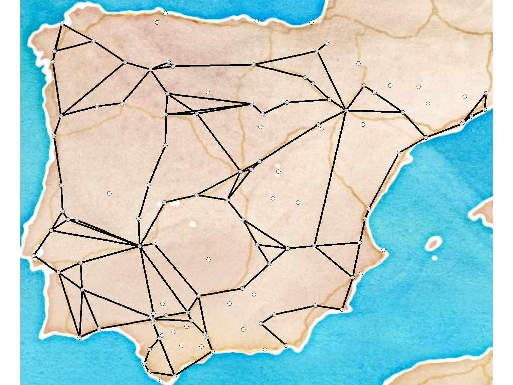
7.2 Planar Networks and Trees
7.2.1 Evaluating Planarity
A planar network is a network that can be drawn on a plane where the edges do not cross but instead always end in nodes. In many small networks it is relatively easy to determine whether or not a network is planar by simply viewing a network graph. In larger graphs, this can sometimes be difficult.
There is a package available for R called RBGL which is an R implementation of something called the Boost Graph Library. This set of routines includes many powerful tools for characterizing network topology including planarity. This package is not, however, in the CRAN archive where the packages we have worked with so far reside so it needs to be installed from another archive called Bioconductor. In order to install this libary, run the following lines of code.
if (!requireNamespace("BiocManager", quietly = TRUE))
install.packages("BiocManager")
BiocManager::install("RBGL")With this in place we can now preform an analysis called the Boyer-Myrvold planarity test (Boyer and Myrvold 2004). This analysis performs a set of operations on a graph structure to evaluate whether or not it can be defined as a planar graph (see publication for more details).
Let’s take a look at our Roman Road data.
library(RBGL)
# First convert to a graphNEL object for planarity test
g <- as_graphnel(road_net)
# Implement test
boyerMyrvoldPlanarityTest(g)## [1] FALSEThis results suggests that our Roman Road data is not planar. We can plot the data to evaluate this and do see crossed edges that could not be repositioned.
library(ggraph)
set.seed(5364)
ggraph(road_net, layout='kk') +
geom_edge_link() +
geom_node_point(size=3) +
ggtitle("Network of Roman Roads") +
theme_graph()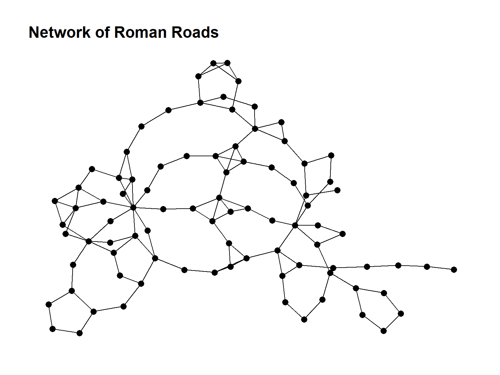
Now, by way of example, we can generate a small random network that is planar and see the results of the test. Note that in the network graph that is produced the visual is not planar but could be a small number of nodes were moved. Unfortunately planar graph drawing is not currently implemented into igraph or other packages so you cannot automatically plot a graph as planar even if it meets the criteria of a planar graph.
set.seed(49)
g <- erdos.renyi.game(20, 1/8)
set.seed(939)
ggraph(g, layout="stress") +
geom_edge_link() +
geom_node_point(size=2) +
theme_graph()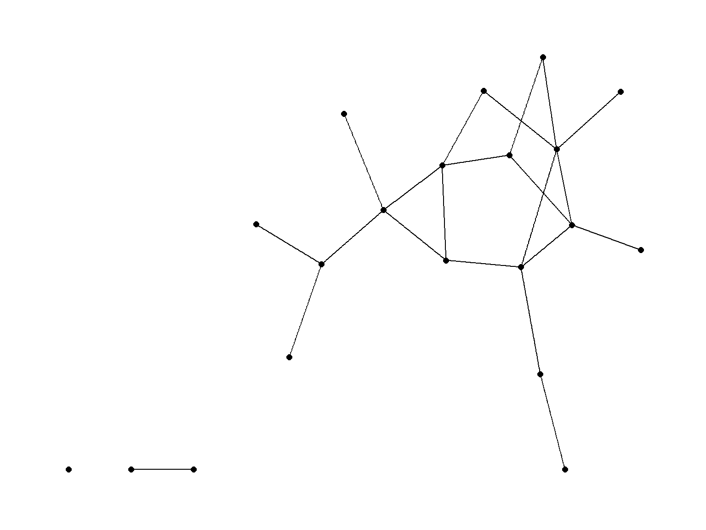
g <- as_graphnel(g)
boyerMyrvoldPlanarityTest(g)## [1] TRUEHere is another example where the graph layout algorithm happens to produce a planar graph.
set.seed(4957)
g <- erdos.renyi.game(20, 1/8)
set.seed(939)
ggraph(g, layout="stress") +
geom_edge_link() +
geom_node_point(size=2) +
theme_graph()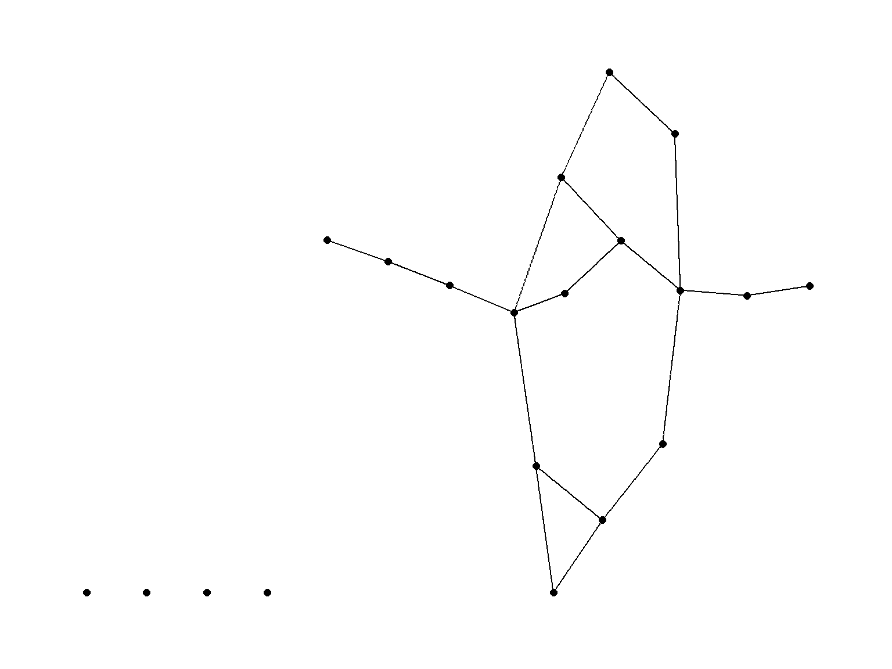
g <- as_graphnel(g)
boyerMyrvoldPlanarityTest(g)## [1] TRUE7.2.2 Defining Trees
A tree is a network that is connected and acyclic. Trees contain the minimum number of edges for a set of nodes to be connected, which results in an acyclic network with some interesting properties:
- Every edge in a tree is a bridge, in that its removal would increase the number of components (see section 4.4.5).
- The number of edges in a tree is equal to the number of nodes minus one.
- There can be only one single path between every pair of nodes in a tree.
In R using the igraph package it is possible to both generate trees and also to take an existing network and define what is called the minimum spanning tree of that graph or the minimum acyclic component.
Let’s create a simple tree using the “make_tree” function in igraph.
tree1 <- make_tree(n=50, children=5, mode="undirected")
tree1## IGRAPH 14d9893 U--- 50 49 -- Tree
## + attr: name (g/c), children (g/n), mode (g/c)
## + edges from 14d9893:
## [1] 1-- 2 1-- 3 1-- 4 1-- 5 1-- 6 2-- 7 2-- 8 2-- 9 2--10 2--11
## [11] 3--12 3--13 3--14 3--15 3--16 4--17 4--18 4--19 4--20 4--21
## [21] 5--22 5--23 5--24 5--25 5--26 6--27 6--28 6--29 6--30 6--31
## [31] 7--32 7--33 7--34 7--35 7--36 8--37 8--38 8--39 8--40 8--41
## [41] 9--42 9--43 9--44 9--45 9--46 10--47 10--48 10--49 10--50plot(tree1)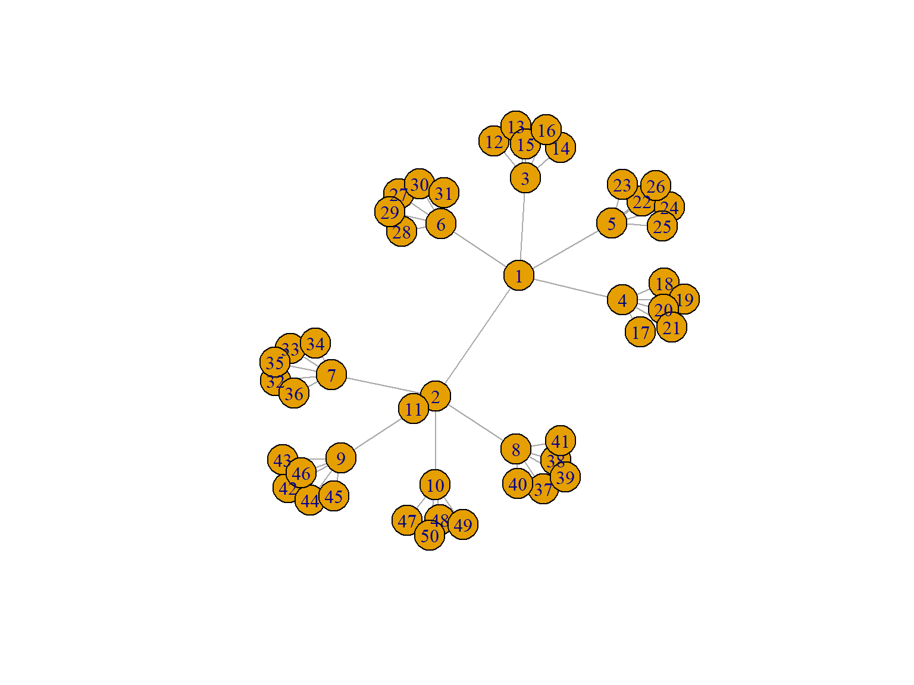
In the example here you can see the branch and leaf structure of the network where there are central nodes that are hubs to a number of other nodes and so on, but there are no cycles back to the previous nodes. Thus, such a tree is inherently hierarchical.In the next sub-section, we will discuss the use of minimum spanning trees.
It is also possible plot trees with a heirarchical network layout where nodes are arranged at levels of the hierarchy. In this case you need to specify the node or nodes that represent the first layer using the “root” call within the ggraph call.
ggraph(tree1, layout = 'igraph', algorithm = 'tree', root=1) +
geom_edge_diagonal(edge_width = 0.5, alpha =.4) +
geom_node_text(aes(label = V(tree1)), size=3.5) +
theme_void() 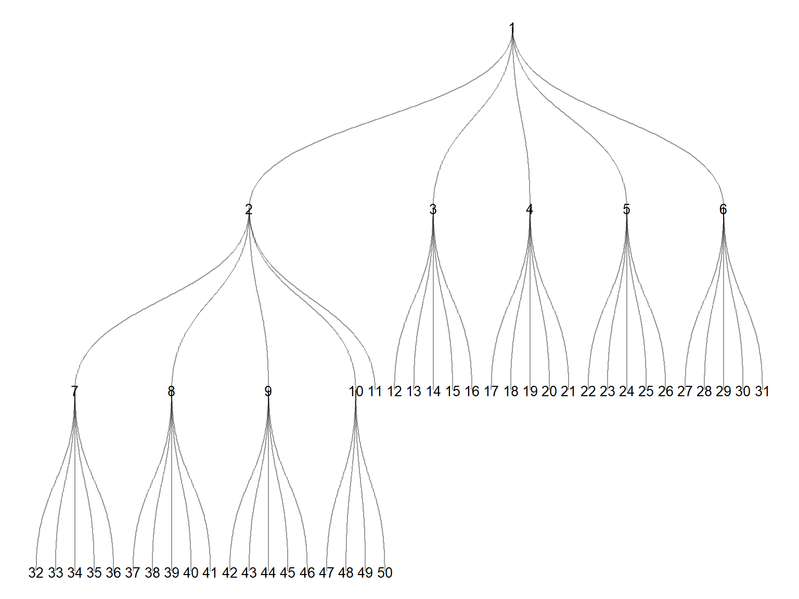
7.3 Spatial Network Models
In Chapter 7.5 in Brughmans and Peeples (2022) we go over a series of spatial network models that provide a number of different ways of defining networks from spatial data. In this sub-section we demonstrate how to define and analyze networks using these approaches.
7.3.1 Relative Neighborhood Networks
Relative neighborhood graph: a pair of nodes are connected if there are no other nodes in the area marked by the overlap of a circle around each node with a radius equal to the distance between the nodes.
The R package cccd contains functions to define relative neighborhood networks from distance data using the “rng” function. This function can either take a distance matrix object as created above or a set of coordinates to calculate the distance within the call. The output of this function is an igraph object. For large graphs it is also possible to limit the search for possible neighbors to k neighbors.
Let’s use our previously created distance matrix and plot the results.
library(cccd)
rng1 <- rng(nodes[,c(3,2)])
ggraph(rng1, layout="kk") +
geom_edge_link() +
geom_node_point(size=2) +
theme_graph()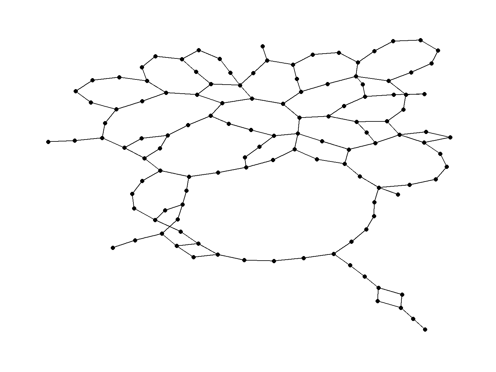
We can also plot the results using geographic coordinates.
ggraph(rng1, layout="manual",
x=nodes[,3], y=nodes[,2]) +
geom_edge_link() +
geom_node_point(size=2) +
theme_graph()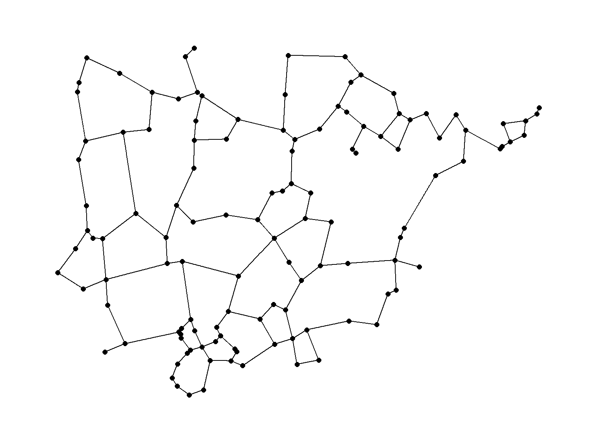
7.3.2 Gabriel Graphs
Gabriel graph: a pair of nodes are connected in a Gabriel graph if no other nodes lie within the circular region with a diameter equal to the distance between the pair of nodes.
Again we can use a function in the cccd package to define Gabriel Graph igraph objects from x and y coordinates. Let’s take a look using the Roman Road data. See ?gg for details on the options including different algorithms for calculating Gabriel Graphs. We define a Gabriel graph here and plot it using an algorithmic layout and then geographic coordinates.
gg1 <- gg(x=nodes[,c(3,2)])
ggraph(gg1, layout="stress") +
geom_edge_link() +
geom_node_point(size=2) +
theme_graph()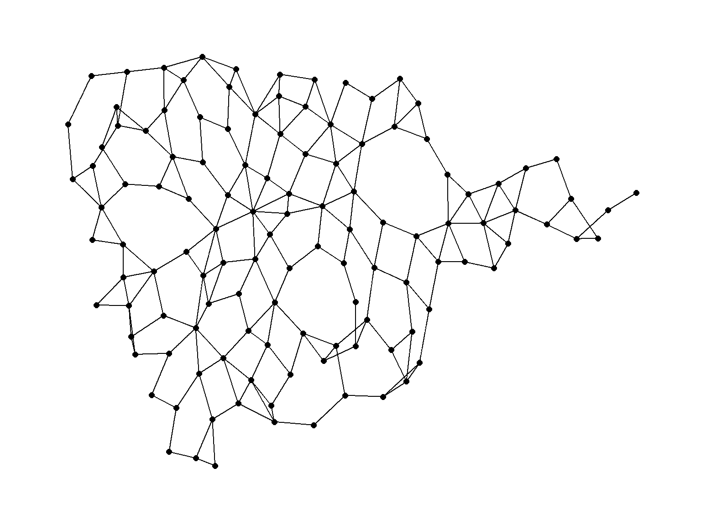
ggraph(gg1, layout="manual",
x=nodes[,3], y=nodes[,2]) +
geom_edge_link() +
geom_node_point(size=2) +
theme_graph()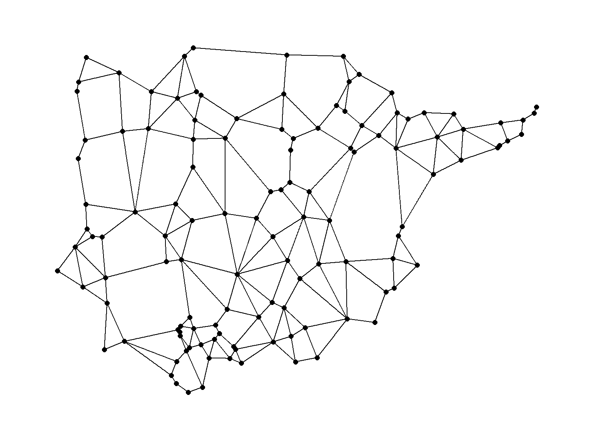
7.3.3 Beta Skeletons
Beta skeleton: a Gabriel graph in which the diameter of the circle is controlled by a parameter beta.
In R the gg function for producing Gabriel Graphs has the procedure for beta skeletons built directly in. The argument r in the gg function controls the beta parameter. When r=1 a traditional Gabriel graph is returned. When the parameter r > 1 there is a stricter definition of connection resulting in fewer ties and when r < 1 link criteria are loosened. See ?gg for more details.
beta_s <- gg(x=nodes[,c(3,2)], r=1.5)
ggraph(beta_s, layout="manual",
x=nodes[,3], y=nodes[,2]) +
geom_edge_link() +
geom_node_point(size=2) +
theme_graph()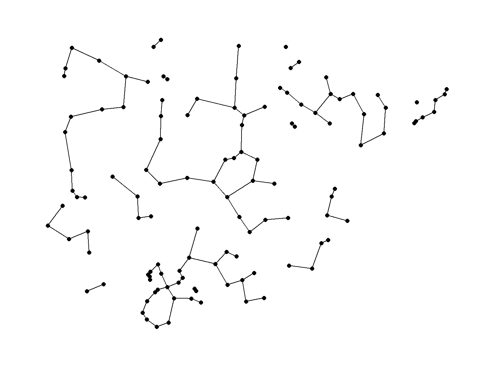
7.3.4 Minimum Spanning Trees
Minimum spanning tree: in a set of nodes in the Euclidean plane, edges are created between pairs of nodes to form a tree where each node can be reached by each other node, such that the sum of the Euclidean edge lengths is less than the sum for any other spanning tree.
Perhaps the most common use-case for trees in archaeological networks is to define the minimum spanning tree of a given graph or the minimum set of nodes and edges required for a fully connected graph. The igraph package has a built-in function that defines the minimum spanning tree for a given graph. Let’s try this with the Roman Road and then plot it as a node-link diagram and a map.
mst_net <- igraph::mst(road_net)
set.seed(4643)
ggraph(mst_net, layout="kk") +
geom_edge_link() +
geom_node_point(size=4) +
theme_graph()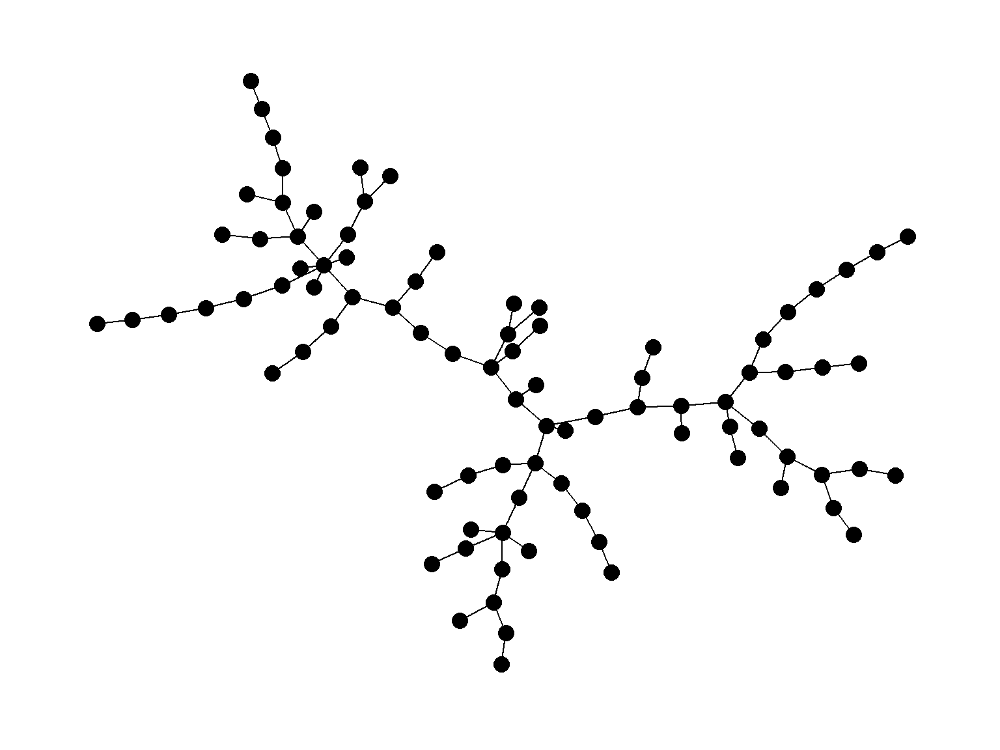
# Extract edgelist from network object
edgelist <- get.edgelist(mst_net)
# Create dataframe of beginning and ending points of edges
edges <- as.data.frame(matrix(NA,nrow(edgelist),4))
colnames(edges) <- c("X1","Y1","X2","Y2")
for (i in 1:nrow(edgelist)) {
edges[i,] <- c(nodes[which(nodes$Id==edgelist[i,1]),3],nodes[which(nodes$Id==edgelist[i,1]),2],
nodes[which(nodes$Id==edgelist[i,2]),3],nodes[which(nodes$Id==edgelist[i,2]),2])
}
ggmap(myMap) +
geom_segment(data = edges, aes(x=X1, y=Y1, xend=X2, yend=Y2), col='black', size=1) +
geom_point(data = nodes[,c(3,2)], aes(long,lat), alpha=0.8, col='black', fill="white", shape=21, size=1.5, show.legend=F) +
theme_void()## Warning: Removed 2 rows containing missing values (geom_point).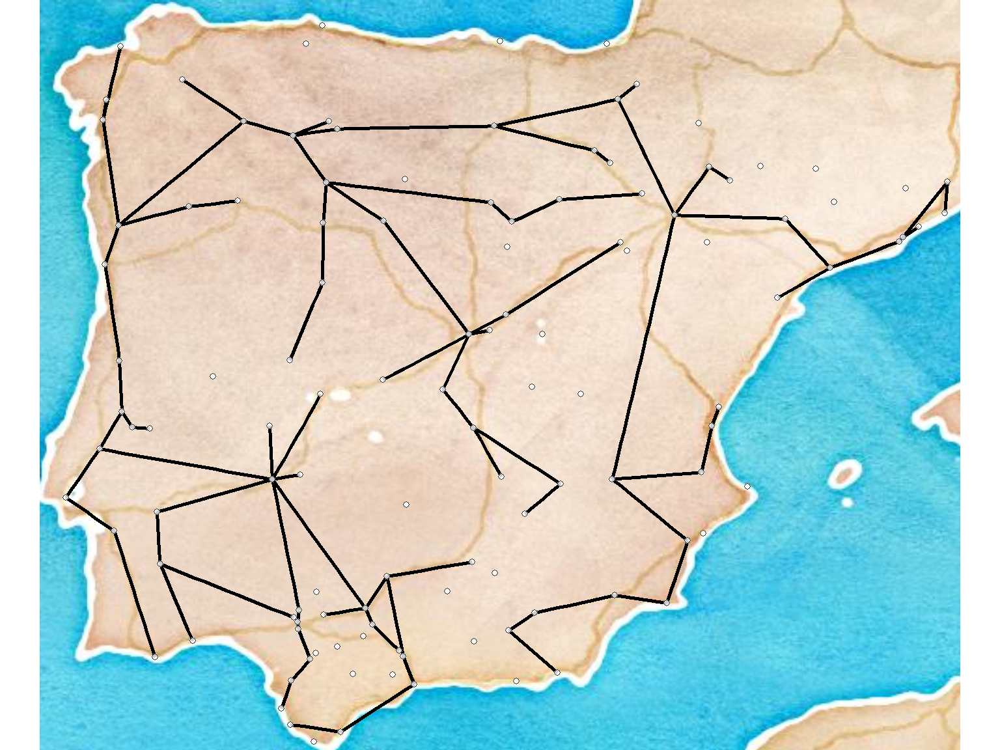
Note that minimum spanning trees can also be used for weighted graphs such that weighted connections will be preferred in defining tree structure. See ?mst for more details.
7.3.5 Delaunay Triangulation
Delaunay triangulation: a pair of nodes are connected by an edge if and only if their corresponding regions in a Voronoi diagram share a side.
Voronoi diagram or Thiessen polygons: for each node in a set of nodes in a Euclidean plane, a region is created covering the area that is closer or equidistant to that node than it is to any other node in the set.
The package deldir in R allows for the calculation of Delaunay triangles with x and y coordinates as input. By default the deldir function will define a boundary that extends slightly beyond the xy coordinates of all points included in the analysis. This boundary can also be specified within the call using the “rw” argument. See ?deldir for more details.
The results of this function can be directly plotted and the output also contains coordinates necessary to integrate the results into another type of figure like a ggmap. Let’s take a look.
library(deldir)
dt1 <- deldir(nodes[,3],nodes[,2])
plot(dt1)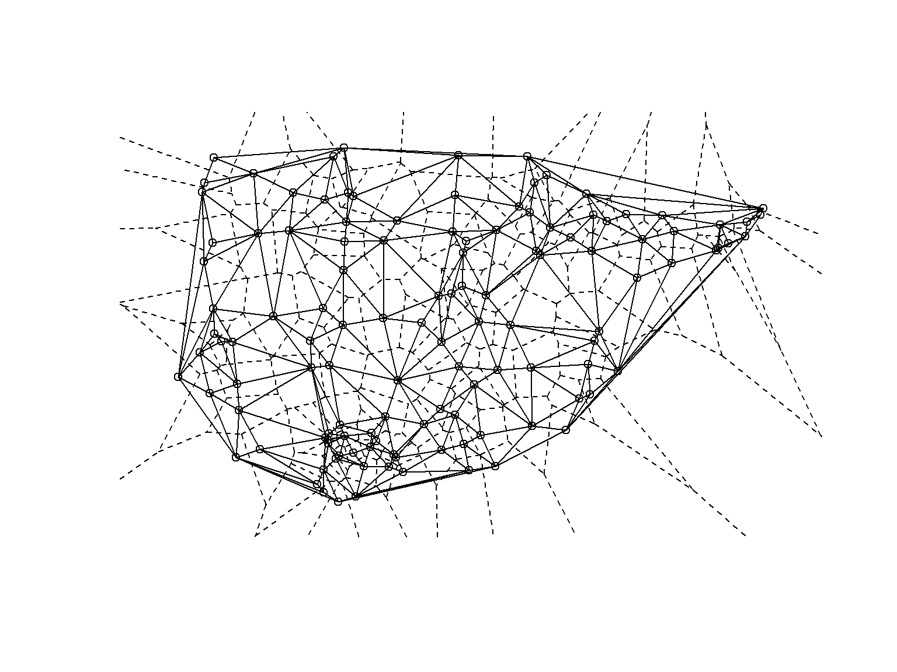
# Extract Voronoi polygons for plotting
mapdat <- as.data.frame(dt1$dirsgs)
# Extract network for plotting
mapdat2 <- as.data.frame(dt1$delsgs)
ggmap(myMap) +
geom_segment(data=mapdat, aes(x=x1, y=y1, xend=x2, yend=y2), col='black', size=1) +
geom_segment(data=mapdat2, aes(x=x1, y=y1, xend=x2, yend=y2), col='red', size=1) +
geom_point(data = nodes, aes(long,lat), alpha=0.8, col='black', fill="white", shape=21, size=3, show.legend=F) +
theme_void()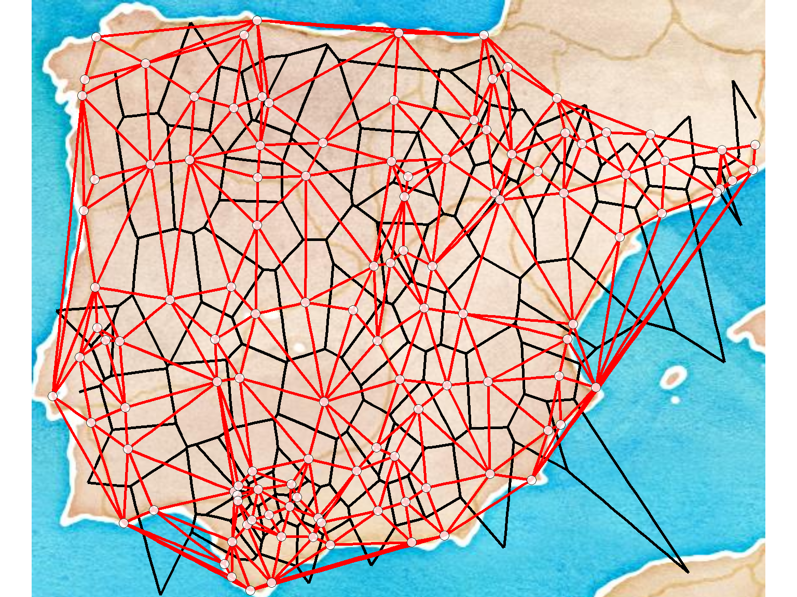
7.3.6 K-nearest Neighbors
K-nearest neighbor network: each node is connected to K other nodes closest to it.
The cccd package has a routine that allows for the calculation of K-nearest neighbor graphs from geographic coordinates or a precomputed distance matrix. In this example we use the Roman Road data and calculate K=1 and K=6 nearest neighbor networks and plot the both simultaneously.
# Calculate k=1 nearest neighbor graph
nn1 <- nng(x=nodes[,c(3,2)], k=1)
# Calculate k=6 nearest neighbor graph
nn6 <- nng(x=nodes[,c(3,2)], k=6)
EL1 <- as.data.frame(rbind(cbind(get.edgelist(nn6), rep("K=6", nrow(get.edgelist(nn1)))),
cbind(get.edgelist(nn1), rep("K=1", nrow(get.edgelist(nn1))))))
colnames(EL1) <- c("from","to","K")
g <- graph_from_data_frame(EL1)
# Plot both graphs
ggraph(g, layout="manual",
x=nodes[,3], y=nodes[,2]) +
geom_edge_link(aes(color=factor(K)), width=1.5) +
geom_node_point(size=2) +
labs(edge_color="K") +
theme_graph()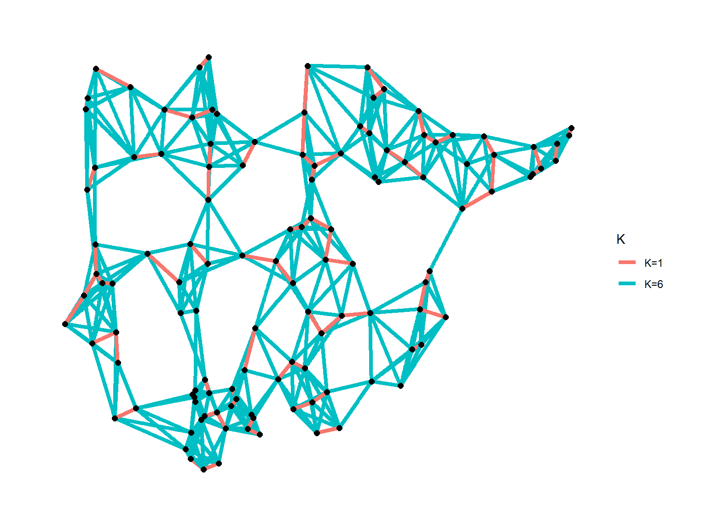
7.3.7 Maximum Distance Networks
Maximum distance network: each node is connected to all other nodes at a distance closer than or equal to a threshold value. In order define a maximum distance network we simply need to define a threshold distance and define all nodes greater than that distance as unconnected and nodes within that distance as connected. This can be done in base R using the dist function we used above.
Since the coordinates we are using here are in decimal degrees we need to calculate distances based on “great circles” across the globe rather than Euclidean distances on a projected plane. There is a function called “distm” in the “geosphere” package that allows us to do this. If you are working with projected data, you can simply use the “dist” function in the place of “distm” like the example below.
Next, in order to define a minimum distance network we simply binarize this matrix. We can do this using the “event2dichot” function within the statnet package and easily create an R network objects. Let’s try it out with the Roman Road data for thresholds of 100,000 and 250,000 meters.
library(statnet)
library(geosphere)
d1 <- distm(nodes[,c(3,2)])
# Note we use the leq=TRUE argument here as we want nodes less than the threshold to count.
net100 <- network(event2dichot(d1, method='absolute', thresh=100000, leq=TRUE), directed=F)
net250 <- network(event2dichot(d1, method='absolute', thresh=250000, leq=TRUE), directed=F)
# Plot 100 Km network
ggraph(net100, layout="manual",
x=nodes[,3], y=nodes[,2]) +
geom_edge_link() +
geom_node_point(size=2) +
theme_graph()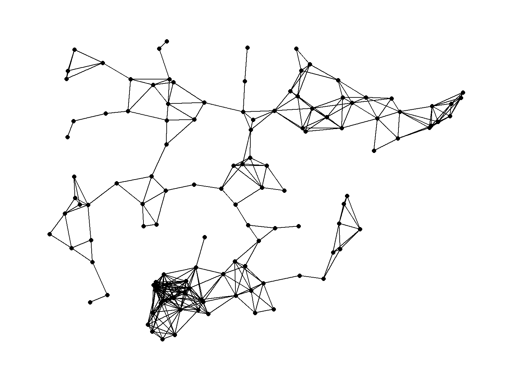
# Plot 250 Km network
ggraph(net250, layout="manual",
x=nodes[,3], y=nodes[,2]) +
geom_edge_link() +
geom_node_point(size=2) +
theme_graph()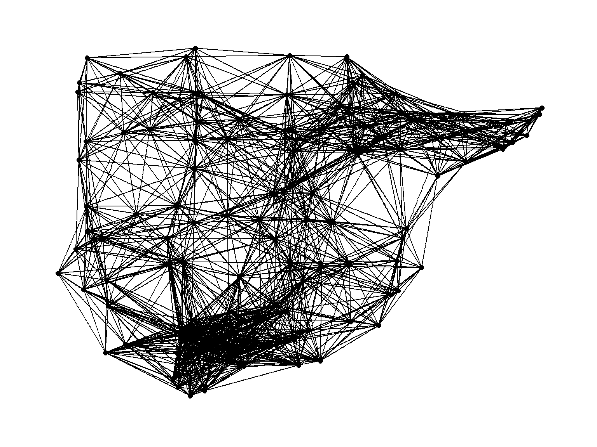
7.4 Case Studies
7.4.1 Proximity of Iron Age sites in Southern Spain
The first case study in Chapter 7 of Brughmans and Peeples (2022) is an example of several of the methods for defining networks using spatial data outlined above using the locations of 86 sites in the Guadalquivir river valley in Southern Spain. In the code chunks below, we replicate the analyses presented in the book.
First we read in the data which represents site location information in lat/long decimal degrees.
guad <- read.csv("data/Guadalquivir.csv", header=TRUE)Next we create a distance matrix based on the decimal degrees locations using the “distm” function.
library(geosphere)
g_dist1 <- as.matrix(distm(guad[,c(2,3)]))
g_dist1[1:4,1:4]## [,1] [,2] [,3] [,4]
## [1,] 0.00 69995.82 42265.58 51296.53
## [2,] 69995.82 0.00 28240.50 29202.84
## [3,] 42265.58 28240.50 0.00 23692.10
## [4,] 51296.53 29202.84 23692.10 0.00From here we can create maximum distance networks at both the 10km and 18km distance and plot it using the geographic location of nodes for node placement.
library(intergraph)
# Note we use the leq=TRUE argument here as we want nodes less than the threshold to count.
net10 <- asIgraph(network(event2dichot(g_dist1, method='absolute', thresh=10000, leq=TRUE), directed=F))
net18 <- asIgraph(network(event2dichot(g_dist1, method='absolute', thresh=18000, leq=TRUE), directed=F))
g10_deg <- as.data.frame(igraph::degree(net10))
colnames(g10_deg) <- 'degree'
g18_deg <- as.data.frame(igraph::degree(net18))
colnames(g18_deg) <- 'degree'
# Plot histogram of degree for 10km network
h10 <- ggplot(data=g10_deg) +
geom_histogram(aes(x=degree),bins=15)
# Plot histogram of degree for 18km network
h18 <- ggplot(data=g18_deg) +
geom_histogram(aes(x=degree),bins=15)
# Plot 10 Km network
g10 <- ggraph(net10, layout="manual",
x=guad[,2], y=guad[,3]) +
geom_edge_link() +
geom_node_point(size=2) +
theme_graph()
# Plot 18 Km network
g18 <- ggraph(net18, layout="manual",
x=guad[,2], y=guad[,3]) +
geom_edge_link() +
geom_node_point(size=2) +
theme_graph()
g18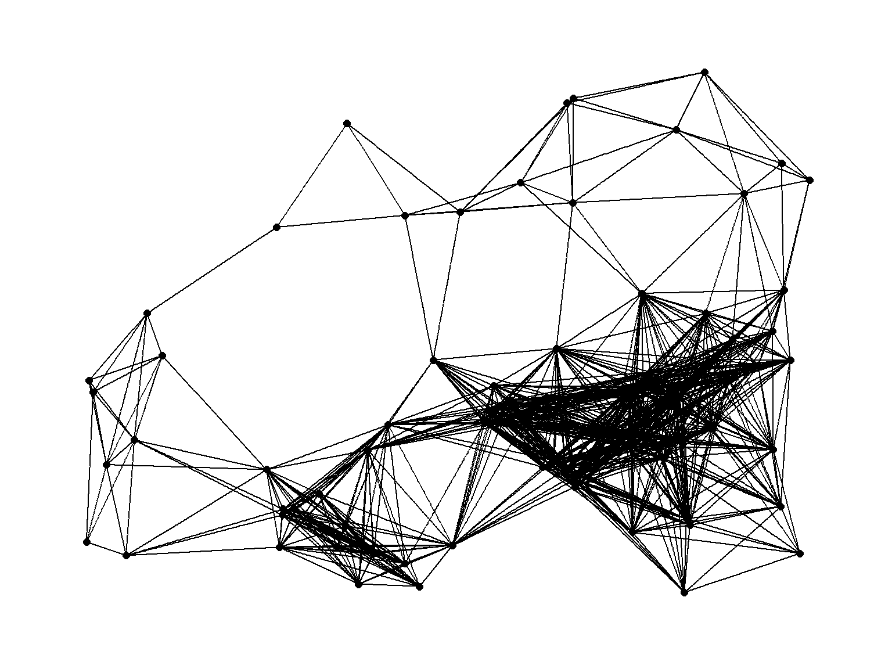
If we want to combine the degree distribution plot and the network into the same frame, we can use the “inset_element” function in the “patchwork” library.
library(patchwork)
plot_a <- g10 + inset_element(h10, left = 0, bottom = 0.7, right = 0.25, top = 0.99)
plot_b <- g18 + inset_element(h18, left = 0, bottom = 0.7, right = 0.25, top = 0.99)
plot_a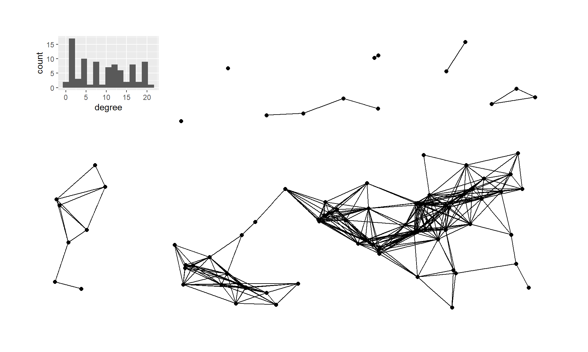
plot_b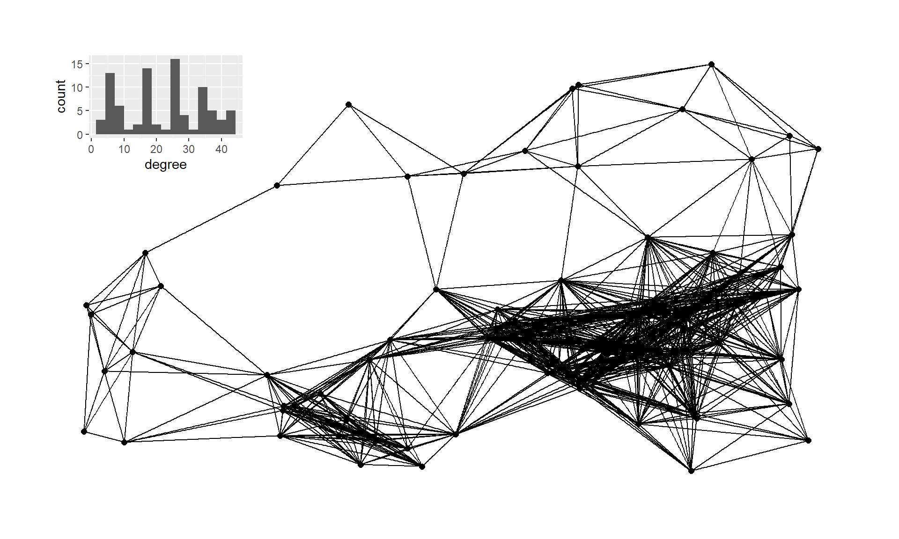
Next, we calculate a relative neighborhood graph for the site locations and plot it with nodes positioned in geographic space.
rng1 <- rng(guad[,2:3])
g_rng <- ggraph(rng1, layout="manual",
x=guad[,2], y=guad[,3]) +
geom_edge_link() +
geom_node_point(size=2) +
theme_graph()
g_rng_deg <- as.data.frame(igraph::degree(rng1))
colnames(g_rng_deg) <- 'degree'
# Plot histogram of degree for relative neighborhood network
h_rng <- ggplot(data=g_rng_deg) +
geom_histogram(aes(x=degree),bins=3)
plot_c <- g_rng + inset_element(h_rng, left = 0, bottom = 0.7, right = 0.25, top = 0.99)
plot_c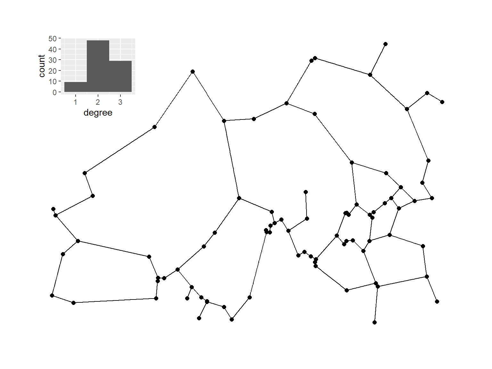
The chunk of code below then calculates and plots the Gabrial graph with the associated degree distribution plot.
gg1 <- gg(x=guad[,2:3])
g_gg <- ggraph(gg1, layout="manual",
x=guad[,2], y=guad[,3]) +
geom_edge_link() +
geom_node_point(size=2) +
theme_graph()
g_gg_deg <- as.data.frame(igraph::degree(gg1))
colnames(g_gg_deg) <- 'degree'
# Plot histogram of degree for relative neighborhood network
h_gg <- ggplot(data=g_gg_deg) +
geom_histogram(aes(x=degree),bins=5)
plot_d <- g_gg + inset_element(h_gg, left = 0, bottom = 0.7, right = 0.25, top = 0.99)
plot_d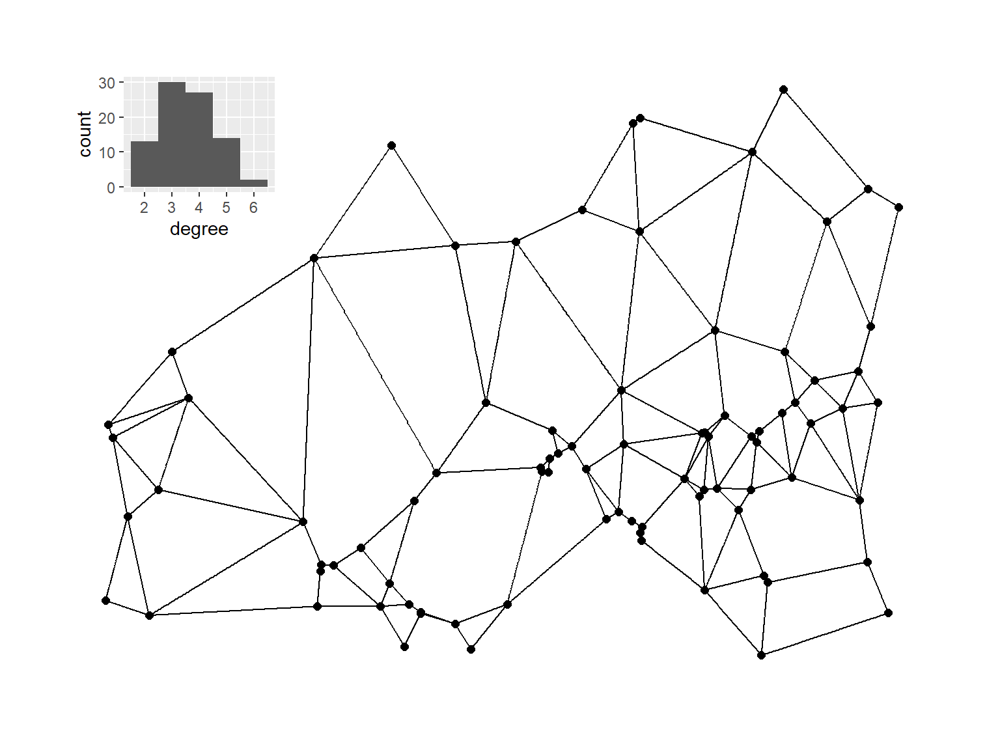
And we’ll combine these four plots into a single figure.
library(ggpubr)
ggarrange(plot_a,plot_b,plot_c,plot_d,nrow=2,ncol=2)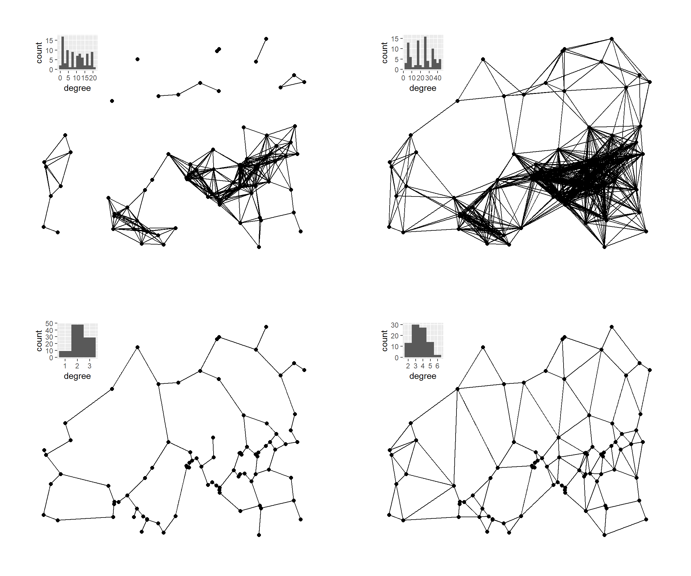
Next, we’ll plot the K-nearest neighbors graphs for k= 2, 3, 4, and 6 with the associated degree distribution for each.
# Calculate k=2,3,4, and 6 nearest neighbor graphs
nn2 <- nng(x=guad[,2:3], k=2)
nn3 <- nng(x=guad[,2:3], k=3)
nn4 <- nng(x=guad[,2:3], k=4)
nn6 <- nng(x=guad[,2:3], k=6)
# Initialiize network graph for each k value
g_nn2 <- ggraph(nn2, layout="manual",
x=guad[,2], y=guad[,3]) +
geom_edge_link() +
geom_node_point(size=2) +
theme_graph()
g_nn3 <- ggraph(nn3, layout="manual",
x=guad[,2], y=guad[,3]) +
geom_edge_link() +
geom_node_point(size=2) +
theme_graph()
g_nn4 <- ggraph(nn4, layout="manual",
x=guad[,2], y=guad[,3]) +
geom_edge_link() +
geom_node_point(size=2) +
theme_graph()
g_nn6 <- ggraph(nn6, layout="manual",
x=guad[,2], y=guad[,3]) +
geom_edge_link() +
geom_node_point(size=2) +
theme_graph()
# Set up dataframes of degree distribution for each network
nn2_deg <- as.data.frame(igraph::degree(nn2))
colnames(nn2_deg) <- 'degree'
nn3_deg <- as.data.frame(igraph::degree(nn3))
colnames(nn3_deg) <- 'degree'
nn4_deg <- as.data.frame(igraph::degree(nn4))
colnames(nn4_deg) <- 'degree'
nn6_deg <- as.data.frame(igraph::degree(nn6))
colnames(nn6_deg) <- 'degree'
# Initialize histogram plot for each degree distribution
h_nn2 <- ggplot(data=nn2_deg) +
geom_histogram(aes(x=degree),bins=5) +
scale_x_continuous(limits = c(0, max(nn2_deg)))
h_nn3 <- ggplot(data=nn3_deg) +
geom_histogram(aes(x=degree),bins=6)+
scale_x_continuous(limits = c(0, max(nn3_deg)))
h_nn4 <- ggplot(data=nn4_deg) +
geom_histogram(aes(x=degree),bins=6)+
scale_x_continuous(limits = c(0, max(nn4_deg)))
h_nn6 <- ggplot(data=nn6_deg) +
geom_histogram(aes(x=degree),bins=5)+
scale_x_continuous(limits = c(0, max(nn6_deg)))
plot_a <- g_nn2 + inset_element(h_nn2, left = 0, bottom = 0.7, right = 0.25, top = 0.99)
plot_b <- g_nn3 + inset_element(h_nn3, left = 0, bottom = 0.7, right = 0.25, top = 0.99)
plot_c <- g_nn4 + inset_element(h_nn4, left = 0, bottom = 0.7, right = 0.25, top = 0.99)
plot_d <- g_nn6 + inset_element(h_nn6, left = 0, bottom = 0.7, right = 0.25, top = 0.99)
library(ggpubr)
ggarrange(plot_a,plot_b,plot_c,plot_d,nrow=2,ncol=2)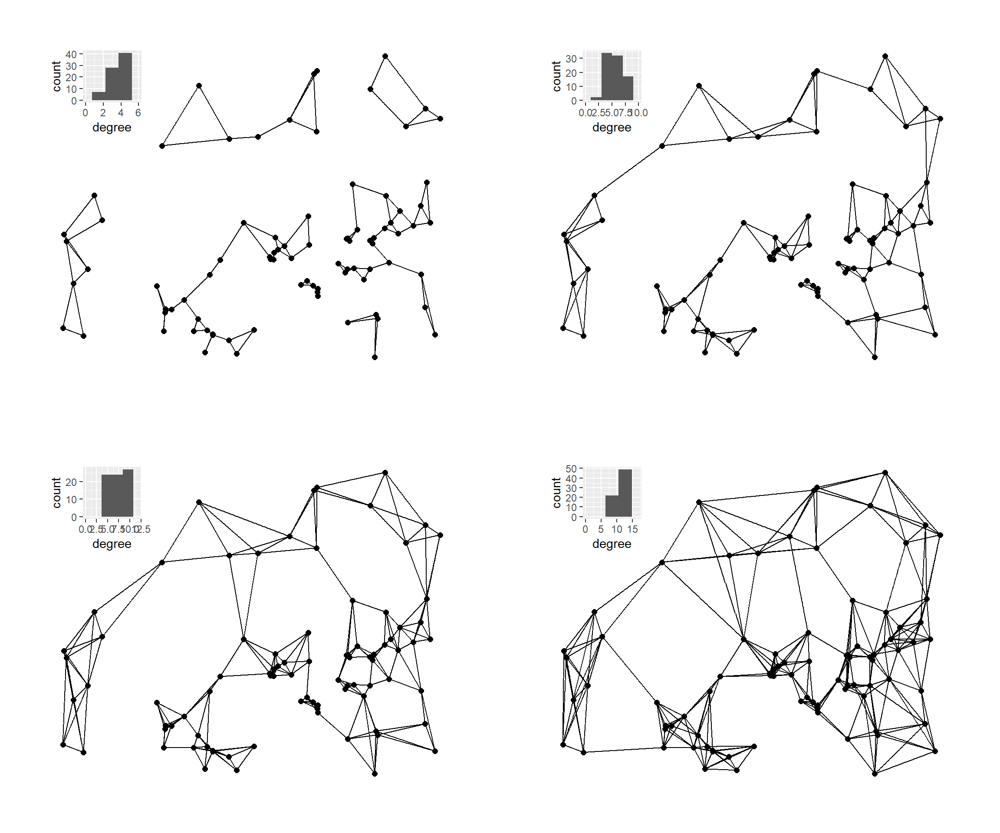
7.4.2 Networks in Space in the U.S. Southwest
The second case study in Chapter 7 of Brughmans and Peeples (2022) provides an example of how we can use spatial network methods to analyze material cultural network data. We use the Chaco World data here and you can download the map data, the site attribute data, and the ceramic frequency data to follow along.
The first analysis expores the degree to which similarities in ceramics (in terms of Brainerd-Robinson similarity based on wares) can be explained by spatial distance. To do this we simply define a ceramic similarity matrix, a Euclidean distance matrix, and the fit a model using distance to explain ceramic similarity using a general additive model (gam) approach. The gam function we use here is in the mgcv package. Note that the object “dmat” is created using the “dist” function as the data we started with are already projected site locations using UTM coordinates.
library(mgcv)
load('data/map.RData')
attr <- read.csv('data/AD1050attr.csv',row.names=1)
cer <- read.csv('data/AD1050cer.csv', header=T, row.names=1)
sim <- (2-as.matrix(vegan::vegdist(prop.table(as.matrix(cer),1), method='manhattan')))/2
dmat <- as.matrix(dist(attr[,9:10]))
fit <- gam(as.vector(sim)~as.vector(dmat))
summary(fit)##
## Family: gaussian
## Link function: identity
##
## Formula:
## as.vector(sim) ~ as.vector(dmat)
##
## Parametric coefficients:
## Estimate Std. Error t value Pr(>|t|)
## (Intercept) 7.979e-01 2.547e-03 313.3 <2e-16 ***
## as.vector(dmat) -2.487e-06 1.448e-08 -171.8 <2e-16 ***
## ---
## Signif. codes: 0 '***' 0.001 '**' 0.01 '*' 0.05 '.' 0.1 ' ' 1
##
##
## R-sq.(adj) = 0.372 Deviance explained = 37.2%
## GCV = 0.082702 Scale est. = 0.082699 n = 49729As these results show and as described in the book, spatial distance is a statistically significant predictor of ceramic similarity and distance appear to explain about 37.2% of the variation in ceramic similarity.
The next analysis presented the book creates a series of minimum distance networks from 36Kms all the way out to nearly 400Kms in concentric days travel (36Kms is about one day of travel on foot) and explore the proportion of variance explained by networks constrained on each distance.
# Create a sequence of distances from 36km to 400kms by concentric days travel on foot
kms <- seq(36000,400000,by=36000)
# Define minimum distance networks for each item in "kms" and the calculate variance explained
temp.out <- NULL
for(i in 1:length(kms)) {
dmat.temp <- dmat
dmat.temp[dmat>kms[i]] <- 0
dmat.temp[dmat.temp>0] <- 1
# Calculate gam model and output r^2 value
temp <- gam(as.vector(sim[lower.tri(sim)])~as.vector(dmat.temp[lower.tri(dmat.temp)]))
temp.out[i] <- summary(temp)$r.sq}
# Create data frame of output
dat <- as.data.frame(cbind(kms/1000,temp.out))
colnames(dat) <- c('Dist','Cor')
library(ggplot2)
# Plot the results
ggplot(data=dat) +
geom_line(aes(x=Dist, y=Cor)) +
geom_point(aes(x=Dist, y=Cor),size=3) +
xlab("Maximum Distance Network Threshold (Km)") +
ylab("Proportion of Variance Explained") +
theme_bw() +
theme(axis.text.x=element_text(size=rel(1.5)),axis.text.y=element_text(size=rel(1.5)),
axis.title.x = element_text(size=rel(1.5)),axis.title.y = element_text(size=rel(1.5)))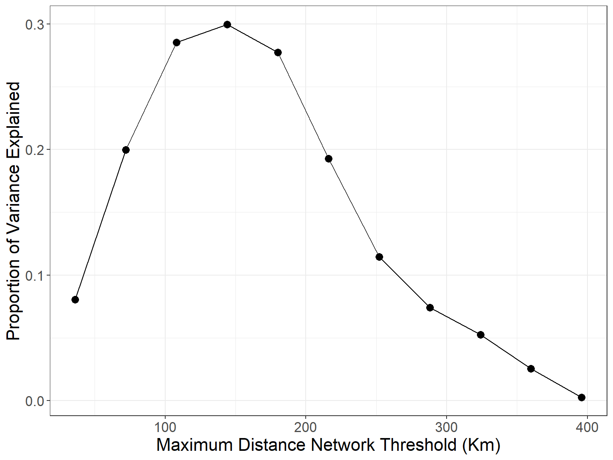
Finally, let’s recreate figure 7.8 from the book to display the 36km minimum distance network for the Chaco region ca. AD 1050-1100. This follows the same basic format for plotting minimum distance networks we defined above.
d36 <- as.matrix(dist(attr[,9:10]))
d36[d36<36001] <- 1
d36[d36>1] <- 0
g36.net <- graph_from_adjacency_matrix(d36, mode="undirected")
locations_sf <- st_as_sf(attr, coords = c("EASTING", "NORTHING"), crs = 26912)
z <- st_transform(locations_sf,crs=4326)
coord1 <- do.call(rbind, st_geometry(z)) %>%
tibble::as_tibble() %>% setNames(c("lon","lat"))
xy <- as.data.frame(cbind(attr$SWSN_Site, coord1))
colnames(xy) <- c('site','x','y')
base <- get_stamenmap(bbox=c(-110.75,33.5,-107,38),zoom=8,maptype="terrain-background",color="bw")
# Extract edgelist from network object
edgelist <- get.edgelist(g36.net)
# Create dataframe of beginning and ending points of edges
edges <- as.data.frame(matrix(NA,nrow(edgelist),4))
colnames(edges) <- c("X1","Y1","X2","Y2")
for (i in 1:nrow(edgelist)) {
edges[i,] <- c(xy[which(xy$site==edgelist[i,1]),2],xy[which(xy$site==edgelist[i,1]),3],
xy[which(xy$site==edgelist[i,2]),2],xy[which(xy$site==edgelist[i,2]),3])
}
m1 <- ggmap(base,darken=0.15) +
geom_segment(data = edges, aes(x=X1, y=Y1, xend=X2, yend=Y2), col='white', size=0.10, show.legend=F) +
geom_point(data = xy,aes(x,y),alpha=0.65, size=1, col='red', show.legend=F) +
theme_void()
m1